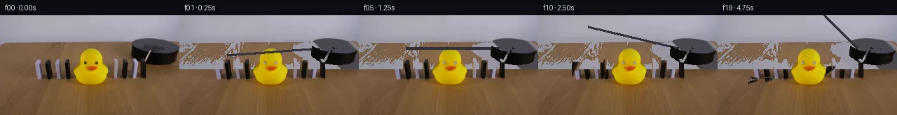

![首帧]()

Round 00
2026-11-05T14:40:50.817288+00:00像素候选变化代码 +522/−0inspection 更新
pixels 2b66731edc9e2a47 · code a33fef992a4cc642
查看本轮 generate.py 真实 diff
--- previous/generate.py +++ current/generate.py @@ -0,0 +1,522 @@ +#!/usr/bin/env python3 +"""generate.py — PixelWorld-Text animation: domino chain reaction triggered by rotating stick. + +Generates 20 frames (256×144 RGB at 4 fps, 5 seconds). +Frame 00 is byte-identical to first_frame.png. +""" + +import numpy as np +from PIL import Image, ImageDraw +from pathlib import Path +import os, sys + +# ── workspace paths ────────────────────────────────────────────────── +WORK = Path(__file__).resolve().parent +TMP = WORK / ".tmp" +TMP.mkdir(exist_ok=True) + +# ── load first frame ───────────────────────────────────────────────── +src = np.array(Image.open(WORK / "first_frame.png")).astype(np.float32) +H, W = 144, 256 +assert src.shape == (H, W, 3) + +# ══════════════════════════════════════════════════════════════════════ +# 1. SCENE DECOMPOSITION — build masks & sprites +# ══════════════════════════════════════════════════════════════════════ + +# ── 1a. Background wall detection ─────────────────────────────────── +# Wall is gray-blue: R ~ G ~ B, bright, top portion of image +wall_mask = ( + (src[:,:,0] > 135) & (src[:,:,1] > 125) & (src[:,:,2] > 135) & + (np.abs(src[:,:,0] - src[:,:,1]) < 25) & + (np.abs(src[:,:,1] - src[:,:,2]) < 25) & + (np.abs(src[:,:,0] - src[:,:,2]) < 25) +) +wall_ys, wall_xs = np.where(wall_mask) +wall_y_max = wall_ys.max() # bottom of wall region + +# ── 1b. Table surface detection ───────────────────────────────────── +# Brown: R > G > B, moderate brightness +table_mask = ( + (src[:,:,0] > 60) & (src[:,:,1] > 30) & (src[:,:,2] > 10) & + (src[:,:,0] > src[:,:,1]) & (src[:,:,1] > src[:,:,2]) & + (src[:,:,0] - src[:,:,2] > 20) +) + +# ── 1c. Duck mask ─────────────────────────────────────────────────── +duck_mask = ( + (src[:,:,0] > 120) & (src[:,:,1] > 80) & (src[:,:,2] < 90) & + (src[:,:,0] > src[:,:,1] + 10) +) +# Orange beak/feet +duck_orange = ( + (src[:,:,0] > 170) & (src[:,:,1] > 60) & (src[:,:,1] < 135) & + (src[:,:,2] < 50) +) +duck_full = duck_mask | duck_orange +duck_ys, duck_xs = np.where(duck_full) +duck_bbox = (duck_ys.min(), duck_ys.max(), duck_xs.min(), duck_xs.max()) # y0,y1,x0,x1 + +# Eye area on duck (small dark dots within duck region) +duck_eye = ( + duck_full & + (src[:,:,0] < 80) & (src[:,:,1] < 80) & (src[:,:,2] < 80) +) + +# ── 1d. Black dominoes mask ───────────────────────────────────────── +black = (src[:,:,0] < 45) & (src[:,:,1] < 45) & (src[:,:,2] < 45) +# Platform: wide dark region on right (x >= 185) +platform_mask = black & (np.arange(W).reshape(1,-1) >= 185) +# Dominoes: narrow dark strips on left (x < 185) +domino_black = black & (np.arange(W).reshape(1,-1) < 185) + +# Identify individual domino columns by x-projection +domino_x_proj = domino_black.sum(axis=0) +domino_groups = [] +in_grp = False +start_x = 0 +for x in range(185): + if domino_x_proj[x] > 0: + if not in_grp: + start_x = x + in_grp = True + else: + if in_grp: + domino_groups.append((start_x, x-1)) + in_grp = False +if in_grp: … diff truncated; 435 more lines …